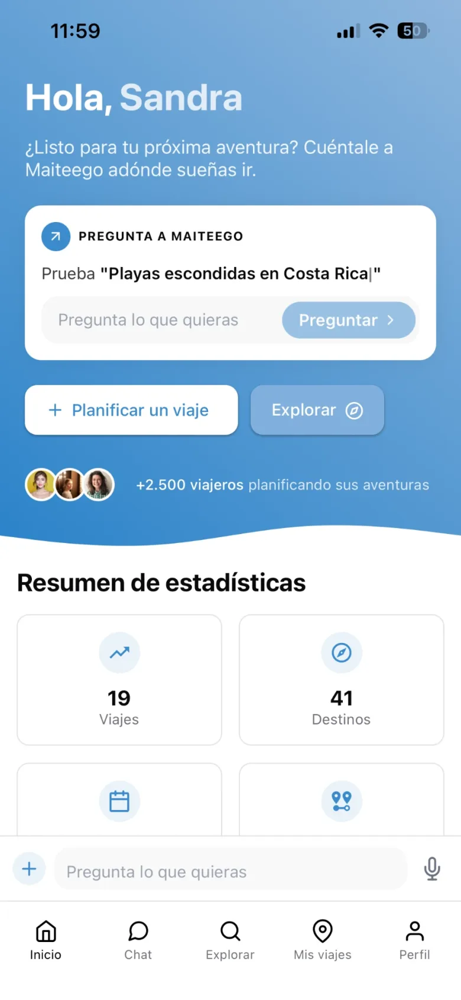
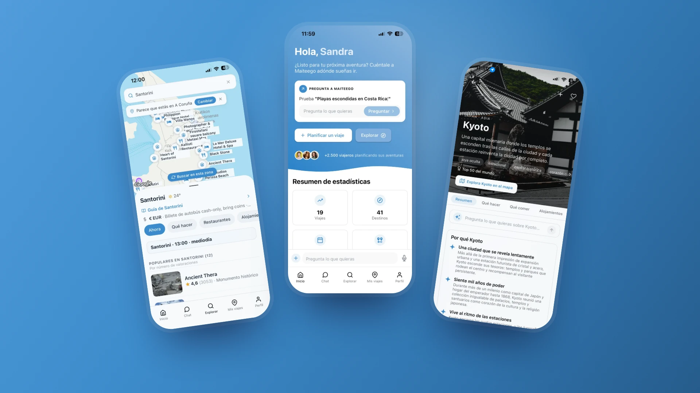
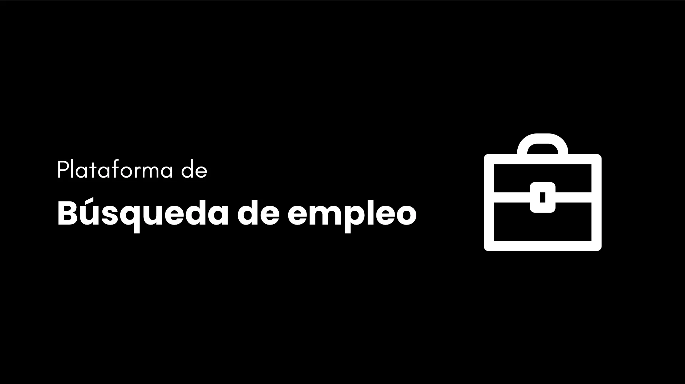
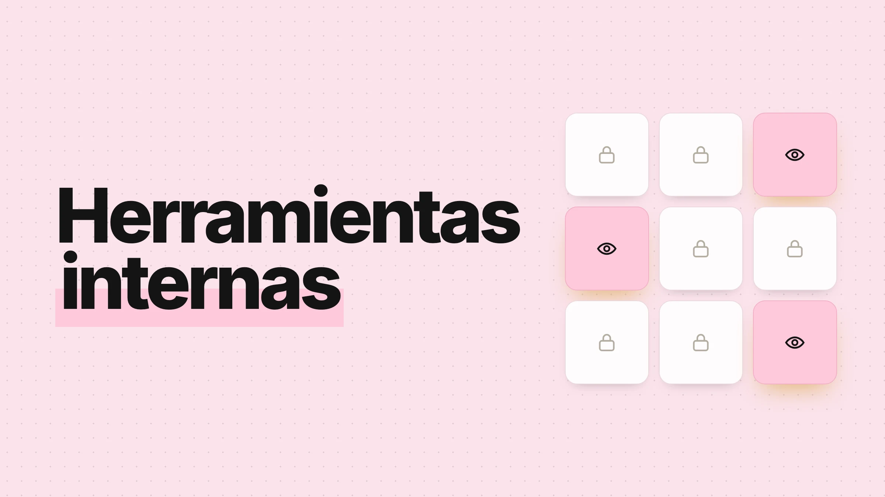

UX / Product Designer en A Coruña. Modelo de datos, frontend y automatizaciones sin equipo de desarrollo: SaaS B2B de HR Tech con más de mil usuarios activos y una app B2C con IA de la que soy cofundadora.

01 – 03
Chat con tarjetas accionables, guías de destino y mapa en vivo. Antes y después de cada pantalla clave con usuarios reales; 18 meses en beta y unos 300 usuarios registrados.
Leer el caso →
«Mi búsqueda» por fases para el candidato, colas de trabajo para el equipo y permisos definidos en el modelo de datos.
Leer el caso →
Reclutamiento para ocho departamentos que no se ven entre sí, y un hackathon de 110 personas con acceso por QR.
Ver los proyectos →
Desde 2023 diseño y construyo productos internos y SaaS B2B en low-code (Airtable, Softr, Make), y desde 2024 soy cofundadora y diseñadora de producto de Maiteego. Me interesan los sistemas con varios roles, las herramientas de uso diario y los productos donde la IA forma parte de la interacción, no un añadido.